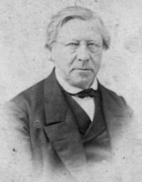
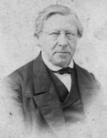

Wilhelm Löhe
Wilhelm Löhe
zusammen mit Friedrich Bauer
Friedrich Bauer

die „Gesellschaft für innere und äußere Mission im Sinne der lutherischen Kirche e.V.“, als Trägerin der von Neuendettelsau ausgehenden Missionsarbeit (vgl. Jahnel, Vorländer 2013, S.287). Sie besteht bis heute und kann als Urgesellschaft auch für „Mission eine Welt“ gesehen werden. Hier wird im Namen zwischen innerer und äußerer Mission unterschieden. Während die „Innere Mission“ den Glauben unter bereits Getauften stärken sollte, hatte „Äußere Mission“ den Auftrag Anders- oder Nichtgläubige (damals „Heiden“ genannt) zum christlichen Glauben zu bekehren. Grundlage für diesen Auftrag war die Überzeugung Vertreter*in des einzig wahren und heilbringenden Glaubens zu sein. Dies war auch die innere Überzeugung der Neuendettelsauer Missionare und ihren Ehefrauen, mit der sie sich auf den Weg zu den „papuanischen Heiden“ machten. Die geistige Haltung mit der das geschah beschreibt 
Johann Flierl
Johann Flierl
in seinen Reisebriefen an seinen Sohn im Missionshaus von 1913.Auch die Neuendettelsauer Missionare waren also Teil des kolonialen Systems im 19. und 20. Jh. und unterstützten die Kolonialmacht bei ihrer „Zivilisierungsmission“. Diese Zivilisierungsmission basierte auf der europäischen Vorstellung eines Kultur- oder Zivilisationsgefälles und der Überzeugung Vertreter einer fortschrittlicheren Kultur zu sein und deshalb den moralischen Auftrag zu haben weniger entwickelte Kulturen zu zivilisieren. Missionsgesellschaften übernahmen während der Kolonialherrschaft Aufgaben, die die Kolonialverwaltung entlasteten und gleichzeitig ihre Macht stabilisierte. Dazu gehörten Tätigkeiten wie Schulwesen oder der Aufbau eines Gesundheitssystems für die Einheimischen. Durch die Vermittlung europäischer Bildung trug die Mission auf lange Sicht aber auch dazu bei, das koloniale System zu unterminieren (vgl. Wendt 2016 S. 245-246).